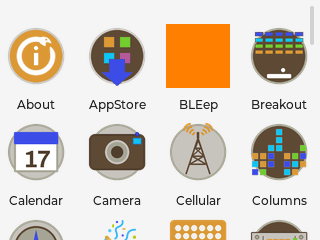
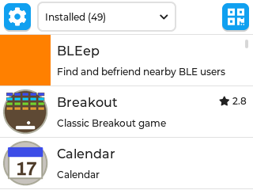
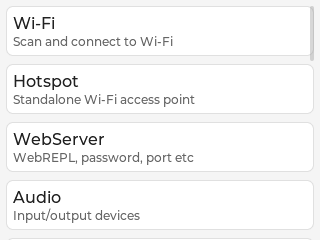
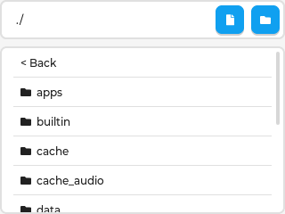
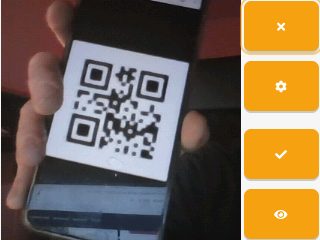
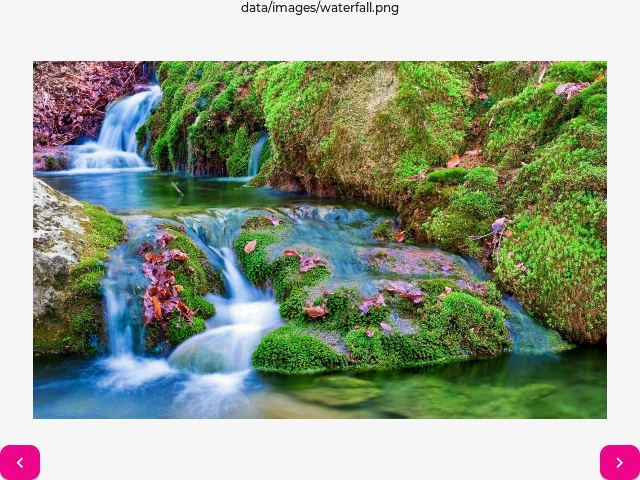

What's new
MP3 and video playback
A native MPEG-1/2/2.5 Layer III decoder plays MP3 from flash or SD card while the UI keeps rendering, with pause, resume and frame-accurate seeking. The video player gains the same controls.
Games at 56 frames per second
A new native renderer lets a C engine own its own surface and present only the rows it changed. Breakout went from 7.6 to 56 fps on a 320×240 badge, with no flicker.
Sound from a bare piezo
The passive buzzer on badge boards is now a real playback output, driven from a timer-fed ring buffer, so WAV and MP3 play on hardware that has no audio codec at all.
Why MicroPythonOS?
MicroPythonOS is a lightweight, fast, and versatile operating system designed to run on microcontrollers like the ESP32 and desktop systems. With a modern Android-like touch screen UI, App Store, and Over-The-Air updates, it’s the perfect OS for innovators and developers.
Screenshots






Supported Hardware

Key Features
- Runs on supported microcontrollers (like ESP32) and desktops
- Android-like touch screen UI with gestures
- App Store for easy app access
- Over-The-Air (OTA) updates
- MP3 and video playback, with pause, resume and seeking
- Audio on boards that only have a piezo buzzer
- A native renderer for games and other C apps
- Supports touch screens, IMUs, and cameras
- Fast and lightweight performance
Advantages
- Native MicroPython foundation for easy development
- Cross-platform compatibility (microcontrollers to desktops)
- Lightweight design for resource-constrained devices
- Fast execution with quick boot times
- Modern touch screen support with gestures
- OTA updates for seamless maintenance
Possibilities
- Easily build apps for specific needs running on a custom device
- Build IoT devices like smart home controllers
- Create educational tools with interactive displays
- Develop decentralized payment systems with Bitcoin Lightning
- Design portable touch screen devices
- Power robotics with IMUs and cameras
- Craft smart wearables with gesture controls
- Prototype DIY projects effortlessly
 Check out MicroPythonOS on GitHub
Check out MicroPythonOS on GitHub